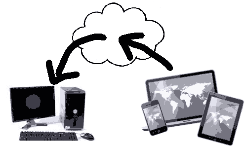

Room Editor Project Overview and CouchDB Configuration
Continuing the research and development for my cloud-based round-trip 2D Revit model editing project, here are some issues I tackled since my last report:
- Project Overview
- Replicating a CouchDB with Python
- Same origin policy snag and resolution
- Learning and struggling with CouchApps
- Relief moving to Kanso
- Next steps
Project Overview
To recapitulate, the grand plan is to grab a 2D floor plan with furniture and equipment layout from the BIM, upload it to the cloud, and make it accessible for viewing on mobile devices:
Furthermore, I am enabling some simple editing operations on the mobile device, e.g. to move the furniture and equipment around in the room a bit, update the cloud-based data repository, and reflect these changes back into the desktop BIM:

All of this with absolutely nil installation on the mobile device, and thus totally ubiquitous, using SVG and server-side scripting.
I already addressed a number of issues in realising this project and am documenting my progress here on the blog, in the three categories desktop (category page), cloud (category page) and mobile (category page).
Here is an overview of the results presented so far, both for this project and some previous related topics, classified into those three categories:
- Project overview and Tech Summit proposal
- Desktop
- Room plan view boundary loops
- Sort and orient curves to form a contiguous loop
- Extrusion analyser and plan view boundaries
- Curve following face and bounding box implementation
- GeoSnoop boundary curve loop visualisation
- Desktop to cloud via DreamSeat CouchDB Client
- Cloud
- Getting Going with the Cloud
- Apollonian Sphere Packing Web Service and AVF
- The BIM 360 Glue Viewer and REST API
- BIM 360 Glue REST API Authentication Using Python
- Free Cloud Based Data Repository with NoSQL, CouchDB, and IrisCouch
- Mobile
Replicating a CouchDB with Python
In my last step, I determined the room, furniture and equipment plan view boundary polygons and uploaded them to a CouchDB database in the cloud, hosted on IrisCouch.
To play around interactively with that data, I would prefer to store it locally instead of on the server.
The easiest way to achieve this is to replicate the database.
Replicating a CouchDB repository is trivial, since it has built-in support for that.
All you need to do is specify the source and target database name and URL.
Also, as you may know, I love Python for command-line scripting.
Happily, several CouchDB interfaces for Python are available. As you can see on that page, they can be pretty simple.
Couchdbkit seems well supported and does the job.
Here is a little Python script that replicates the database 'rooms' created by my Revit add-in in IrisCouch from the web to a new database 'rooms2' my local CouchDB installation:
#!/usr/bin/python import couchdb server = couchdb.Server() server.create( 'rooms2' ) server.replicate( 'http://jt.iriscouch.com/rooms', 'rooms2' )
You cannot make it much shorter or simpler than that, can you?
Same Origin Policy Snag and Resolution
I was originally envisioning a simple architecture composed of three components on the desktop, in the cloud, and on the mobile device, respectively, as illustrated above.
I started looking at how to access the cloud-based data repository from the mobile device and closed my last foray into this area mentioning that I had a nasty surprise discovering that the strict same origin policy prevents my simple JavaScript application from accessing my IrisCouch domain, so I cannot easily read the data on the mobile device in the manner I had expected.
The discovery cost me a few grey hairs and some sleep, but I found a good and obvious solution for that which you are probably all aware of already: server-side scripting.
In fact, this even simplifies things, in the end, since I really have nothing at all to install or implement on the mobile device, and my list of components to implement is reduced from three to two. Ok, it adds some complication to the cloud stuff, of course... or actually just additional learning opportunities.
I had already decided that NoSQL and the CouchDB implementation look like good candidates for my data repository requirements, and that I can test and host them in the cloud for free using the IrisCouch server. Please refer to the link in the overview above for more info on these.
Happily, CouchDB offers full support for server-side scripting. The same-origin policy effectively requires that the HTML from which the JavaScript is loaded must be served up from CouchDB. This can be done by attaching an HTML document to a CouchDB document. You can do this manually, or through the use of CouchApps.
Learning and Struggling with CouchApps
CouchApps are CouchDB generation environments and tools for web application developers interested in creating database-driven applications using nothing but HTML, CSS, and JavaScript.
A CouchApp is simply a collection of files that completely defines a CouchDB database to simplify development, deployment and maintenance. Simple command-line tools are used to synchronise the file collection with the real live CouchDB implementation.
I dived into several of the numerous CouchApp tutorials and was so excited I ended up spending entire nights at it, once with no sleep at all.
Here are some of the things I looked at:
- Getting started
- Build a simple CouchApp
- Good IBM CouchApp tutorial
- A short and effective CouchApp and JavaScript tutorial
- A better introduction and some more modern alternatives
- Documentation for jquery.couch.js
- A very clear and impressive CouchApp video tutorial by Max Ogden
- Very impressive node CouchApp JavaScript library node.couchapp.js
- Using node.js for effective asynchronous processing
- node.js + CouchDB == Crazy Delicious video presentation
Unfortunately, I found it pretty confusing. I learned a huge amount and achieved very little, partly due to the fact that several different CouchApp implementations exist and are used in parallel, and the tutorials do not specify exactly which version they are based on.
Still, I learned enough to continue feeling very enthusiastic about this approach, and then found an easier solution.
Relief Moving to Kanso
After struggling with different CouchApp implementations, I discovered Kanso, toting itself "the best way to create and share apps on CouchDB".
With the little that I know so far, I fully agree with that. Apparently, kanso is the Japanese phrase for simplicity, or, more specifically, simplifying the complex.
So easy! Everything works! The documentation includes a short and succinct getting started tutorial that explains a lot.
Later I found another tutorial that goes further faster than the one included in the documentation pages.
Later still, I found this extremely well documented complete application that can be tested online and demonstrates numerous additional important new features.
After studying these samples and trying to reuse some of the powerful functionality they provide, I am returning more and more often to the Definite Guide for CouchDB and finally starting to understand the basics of view, show and list functions, etc.
Bit by bit, I am managing to get some SVG graphics to display in my server-side scripts. Making use of the Raphael library, as I was planning to do, may prove hard, since there is no ready-built Kanso package for it. I may therefore revert to implementing my room furniture placement editor in pure SVG instead.
Next Steps
My next steps will be:
- Separation of symbol and instance data in my add-in and database structure: currently, the furniture loops are placed absolutely, and multiple instances of a symbol duplicate the same loop over and over again at different locations. I will rewrite this to separate the furniture loop definition, defined by the family symbol, and its placement, defined by the instance. This needs to be done anyway to enable editing the placement data through the editor interaction on the mobile device.
- Learn how to use templates in Kanso.
- Implement server-side generated SVG code to display the room and furniture plan in CouchDB using Kanso.
- Implement editing of SVG on the mobile device and reflect changes back to CouchDB (I do not know how yet).
- Implement Idling event handler and polling of CouchDB in the desktop add-in to reflect the changes back to the BIM in real-time.
- Implement an external application wrapper for the add-in providing four commands:
- Upload to cloud
- Refresh from cloud
- Subscribe to cloud
- Unsubscribe from cloud
I know exactly how to address all these points now, except for reflecting back the SVG editor changes to the CouchDB.
I remain excited and optimistic and look forward to hearing your comments and suggestions.
Cloud and Mobile
Room Editor Project Overview and CouchDB Configuration
By Jeremy Tammik.
I am continuing the research and development for my cloud-based round-trip 2D Revit model editing project.
To recapitulate, the grand plan is to grab a 2D floor plan with furniture and equipment layout from the BIM, upload it to the cloud, and make it accessible for viewing on mobile devices:
Furthermore, I am enabling some simple editing operations on the mobile device, e.g. to move the furniture and equipment around in the room a bit, update the cloud-based data repository, and reflect these changes back into the desktop BIM:
All of this with absolutely nil installation on the mobile device, and thus totally ubiquitous, using SVG and server-side scripting.
Here are some issues I tackled since my last report:
- Project Overview
- Replicating a CouchDB with Python
- Same origin policy snag and resolution
- Learning and struggling with CouchApps
- Relief moving to Kanso
- Next steps
Check it out, and please let us know what you think!